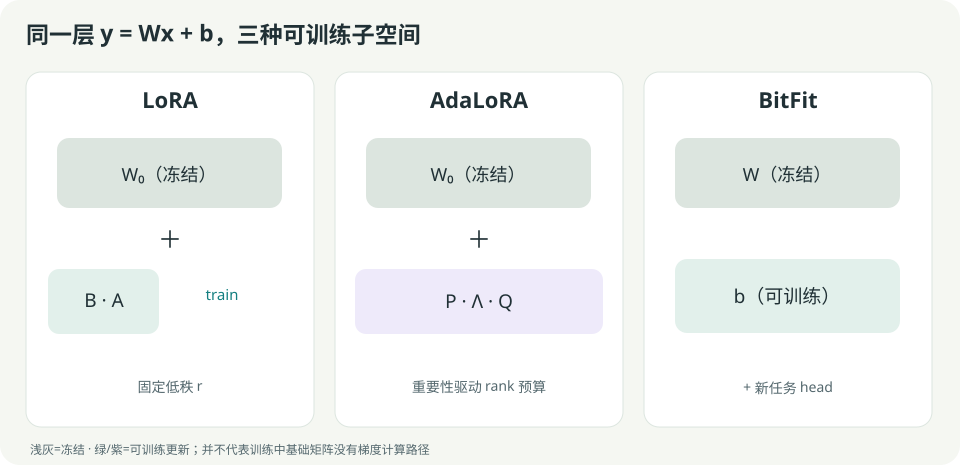
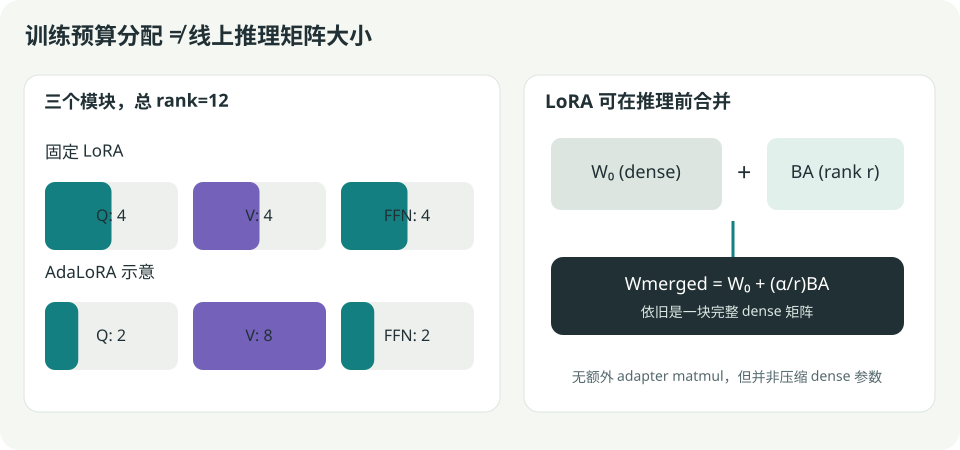

1. 为什么“只训练少量参数”还要分类讨论
微调一个预训练 Transformer Encoder 通常意味着调整注意力 Q/K/V/O、FFN、embedding、LayerNorm 以及任务 head。为每个下游任务复制一整套参数，存储与训练优化器成本会迅速增长。Parameter-Efficient Fine-Tuning（PEFT）希望只存一小份任务增量，共用冻结的基础 checkpoint。这里“冻结”并不代表前向/反向时可以跳过基础模型；梯度仍需从任务损失穿过基础网络的计算图才能更新增量分支。
LoRA、AdaLoRA 和 BitFit 都可以减少可训练参数，但方法的参数空间、动态预算和部署行为不同。LoRA 是固定低秩更新；AdaLoRA 在多个权重矩阵之间动态调配秩预算；BitFit 只改变部分 bias 参数，通常还要训练新任务的输出 head。这不是三个同样形状的 adapter。

2. LoRA：把一个大矩阵的增量分解成两块小矩阵
设原始线性层权重 W₀∈ℝ[d_out,d_in] 固定。普通全量微调更新全部 d_out·d_in 个权重；LoRA 参数化附加增量 ΔW=BA，其中 A∈ℝ[r,d_in]、B∈ℝ[d_out,r]，r 小于输入/输出维度。常见 LoRA 前向为：
原论文与许多实现采用 α/r 缩放，并可初始化 B=0 使模型开始时的增量为零；初始化 A 通常有非零值，以便梯度能够学习。不能把 A=B=0 同时设为零还期待第一步产生通常的有效梯度，因为 ΔW=BA 对其中一项的梯度也会乘上另一零矩阵。
LoRA 可只加到注意力 query/value 投影，也可应用其他线性层。设置 target_modules 时必须检查 checkpoint 实际模块名；同一模型中 query、q_proj 或合并 QKV 是不同实现布局。目标层数决定总增量参数数量，也改变显存与最终效果。
3. 算一笔真实的训练参数账
以教学矩阵 d_in=d_out=768、r=8 为例，普通 full delta 有 768²=589,824 个可训练元素，LoRA 两块矩阵只有 8×768 + 768×8=12,288，相当于这个被适配矩阵的约 2.08%。如果对 12 层每层的 Q/V 两个 768×768 权重都加入 r=8 LoRA，新增可训练矩阵元素约 12×2×12,288=294,912，还不包括独立训练的任务 head、偏置或其他模块。
“只训练 2%”不代表训练峰值显存只有 2%。激活张量要保存（或重新计算），基础模型的权重仍要驻留以执行 forward，反向传播仍经过基础算子；只是在 optimizer states 和可训练 weight gradient 上可以显著省成本。对于长序列任务，activation 常占大头。
4. AdaLoRA：固定预算不等于每个矩阵给相同的秩
固定-rank LoRA 会对每个目标权重分配相同 r，但下游任务对不同层、注意力与 FFN 的需求可能相差很大。AdaLoRA 用 SVD-like 增量参数化表示：
通过评估各奇异三元组（左右方向与对应标量）对训练目标的重要性，动态保留更关键的方向，裁剪较不重要的 singular values，把总体 rank budget 转移到真正需要的层/矩阵中。实际方法结合 importance scoring、正交约束，以及随训练步数变化的预算日程；不是训练前用 SVD 求出 W₀ 的最高奇异值后就固定不变，更不是对任意损失单纯“动态调整 alpha”。
初期 rank 可能设置得较高，再逐步向目标预算收缩。比较 AdaLoRA 与 LoRA 时，公平条件是最终有效参数预算、目标模块覆盖、训练计算、学习率/调度，以及相同数据和下游协议。AdaLoRA 需要额外的 scoring、importance smoothing 与 pruning 状态，因此计算成本和实现复杂度通常高于最简单固定秩 LoRA。
5. BitFit：改动 bias，不依赖低秩矩阵分解
线性层 y=Wx+b 里，BitFit 将 W 冻结，只训练一部分 bias 向量 b；典型设定还会训练新任务的分类 head。对于一个 768×768 权重，bias 只有 768 个参数。但不是所有 Encoder 算子都有 bias：有的 LayerNorm 或投影配置省略 bias，也有社区模型使用不同归一化结构。按参数名字含 bias 筛选之后，必须检查实际训练参数集合与 head。
与 LoRA 不同，BitFit 不增加一个 BA 分支，而是改变本就存在的偏置；因此它在某些结构/任务上可能以极少参数取得不错表现，但更新子空间也更受限制。如果下游任务需要较大的新方向变换，bias-only 能力不足的风险需要通过受控实验而不是靠参数比猜测。
执行 BitFit 时一个常见 bug 是把所有 bias 参数全部冻结、却只让任务 head 训练，然后错误地宣称“跑了 BitFit”。运行前打印每个 requires_grad 的参数名、shape 和数量，运行后比较微调前后 bias 的变化更可靠。
6. 部署时 LoRA 可以合并，AdaLoRA 与 BitFit 应分别核验
若部署框架支持，在无额外特殊非线性分支的 LoRA 线性层上，可合并权重 W_merged=W₀+(α/r)BA，把推理时的两个额外小矩阵乘法折叠为一次基础线性算子。这样可能不增加推理分支开销，但合并后的权重矩阵并不因此变小：节省的是每任务单独存增量的成本，而不是让最终 dense matrix 只剩 r 个参数。
合并时需核对当前 adapter 的 rank/alpha、量化底座是否允许无损合并、权重 dtype，以及多 adapter 并行服务是否需要动态切换。已量化的 int8 base 如果先 dequantize 合并再 requantize，可能引入舍入误差；如果服务用即时 adapter hot-swap，就可能无法完全避免额外 runtime 开销。
BitFit 的变化直接体现在 bias，部署时保存 bias delta 或合并完整改动需具体 checkpoint 支持；AdaLoRA 最终可能导出为固定有效 rank 的低秩更新，但 pruning 与 reparameterization 如何保存必须检查框架的实际导出路径。

7. 同一 BERT 任务上做出有意义的 PEFT 对照
使用相同的 base checkpoint 与 tokenizer，选择一个具体任务（例如中文文本分类），固定训练/验证/测试切分、输入长度分布、batch、epoch 或总 optimizer steps。比较 full fine-tuning、BitFit、固定 r LoRA 与 AdaLoRA，报告可训练参数总数（包括 head）、checkpoint delta 大小、峰值训练显存、训练时间、推理延迟、精度均值与标准差。若某种方法调整了更多超参数，需要注明搜索预算。
推荐两层分析：先做单矩阵 r=4/8/16 的形状与前向等价性检查；再做真实任务训练。训练期间即使 ΔW=0 开始，增量的梯度也不能一概为零（取决于初始化）；部署前需比较 merge 前后在同样 dtype 下 logits 的数值误差。若学生模型没有 bias，BitFit 仅能训练任务 head，这时对比就不再相同。
8. 交互一：r 如何改变一次矩阵的预算
W₀：768×768，LoRA 只增加 ΔW
只比较一个方阵的新增 A/B 参数，不包含任务 head、其他层或优化器状态。
完整 768×768：589,824 个参数。 r=4：A(4×768)+B(768×4)=6,144 个可训练权重。 占这个完整矩阵约 1.04%，但基础权重仍需执行前向。
9. 交互二：同样总秩预算，分给谁
三个目标矩阵、总 rank=12 的示意
假设 Q、V、FFN 三个矩阵都可应用低秩更新。rank 数字是教学分配，不是 AdaLoRA 学到的真实重要性。
固定秩 LoRA：Q=4、V=4、FFN=4，总 rank=12。 无需动态 importance 判断，但不能因任务更依赖 V 而改变预算。 实际新增参数仍要乘各矩阵的输入/输出维度。
10. 选择方法之前最该承认的局限
- LoRA 的低秩假设不是数学定理保证任何任务最优；目标模块、rank 和初始化都会改变结果。
- AdaLoRA 的动态 rank 更灵活，也增加超参数和训练开销，不等于免费得到更高精度。
- BitFit 很省参数，但有些网络根本没有所期望的 bias；只训练分类头不等于真正运行 BitFit。
- 训练“可训练权重比例”不能替代总训练 FLOPs、峰值 RAM、部署模型大小或推理延迟。
关键结论
- LoRA 冻结基础权重并训练
B·A低秩增量；AdaLoRA 用 SVD-like triplets 动态分配有效 rank；BitFit 则优化 bias。 - 每块矩阵的可训练参数是
r(d_in+d_out)，与全模型训练显存或总 FLOPs 不可直接等同。 - LoRA 合并可减少推理分支，但不会把合并后的 dense 权重矩阵缩成 r 维。
- 比较时必须算入任务 head、target modules、调参预算、数据集和真实设备性能。
原始论文与官方实现
- Hu et al., LoRA，§3.1–3.3; Eq. (3), §4。
- Zhang et al., AdaLoRA，§3 method; SVD and budget。
- Ben Zaken et al., BitFit，§2–3 bias-only tuning。
- microsoft/LoRA，official loralib。
- PEFT LoRA implementation guide，merge, scaling and target modules。
- BitFit 官方实现，trainable bias selection。